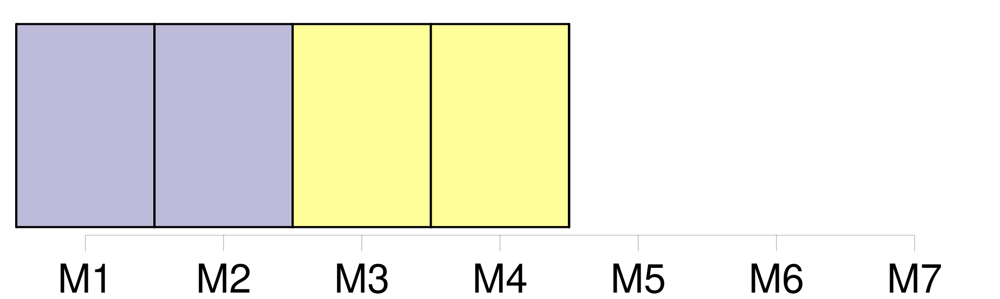
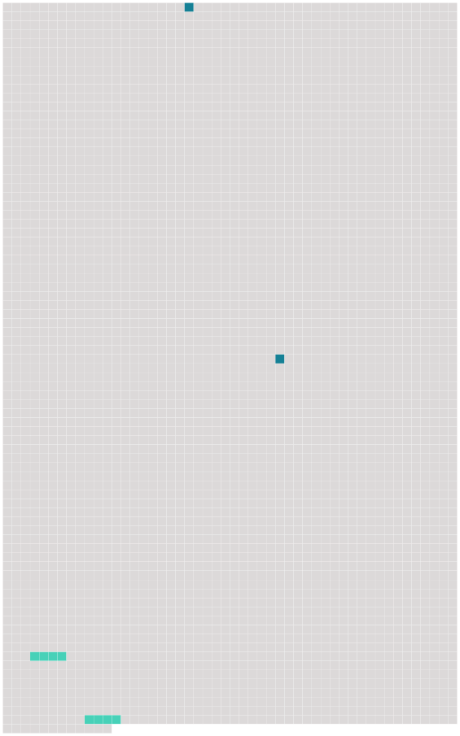

Longueur nb maillons : 4 mentions |
 |
Les votes relatifs aux décisions requérant la majorité qualifiée sont affectés de la pondération suivante : [102 phrases]
Les contributions financières des Etats contractants destinées à faire face aux dépenses prévues au budget de l'Institut sont déterminées selon la clef de répartition suivante : [70 phrases]
Toutefois, le gouvernement [du royaume de Danemark] peut notifier, par une déclaration déposée au plus tard le 31 décembre 1975 auprès du gouvernement de la République italienne, qui en remet une copie certifiée conforme au gouvernement de chacun des autres Etats contractants, que la convention est applicable à ces îles. [6 phrases] Les textes de la convention rédigés en langues anglaise, danoise et irlandaise, tels qu'ils figurent en annexe à la décision du conseil supérieur précisant les modifications rendues nécessaires par l'adhésion [du royaume de Danemark] , de l'Irlande et du Royaume-Uni de Grande-Bretagne et d'Irlande du Nord, font foi au même titre que les textes originaux mentionnés ci-dessus, et le gouvernement de la République italienne en remet une copie certifiée conforme au gouvernement de chacun des autres Etats contractants. |
 |
Il est possible de télécharger la ressource sur la page Ortolang |
Si vous avez des questions ou vous voyez des erreurs, merci d'envoyer un mail à silvia.federzoni89@gmail.com |